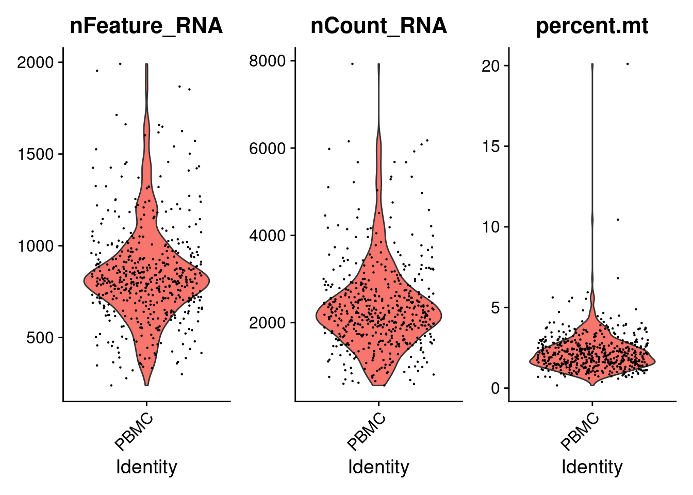

IRTG COURSE: INTRODUCTION TO R
25 May, 2021
1 scRNA-Seq analysis
We will use available data from 10X genomics of Peripheral Blood Mononuclear cells (PBMC). In order to speed up the process only a subset of 500 cells are going to be processed here. Here, we will perform the following tasks:
- Definition of a Seurat object from a matrix of counts
- Quality Control (QC) of the cell samples
- Filtering
- Dimensional reduction
- Clustering
- Differential expression
- Visualization of markers
1.1 Quantifying gene expression in single cells
Genes are expressed in cells by the synthesis of mRNA molecules. Quantification of gene expression in single cells consists of counting and mapping sequenced reads to each gene in each cell. The outcome of this process is a count matrix, which is a discrete matrix of integers corresponding to the number of RNA molecules associated to each gene and cell. The count matrix usually has genes as rows and cells in columns.
In the next lines we will load the matrix of UMI counts into a variable called pbmc.mtx.
## Dependencies
library(rmarkdown)
set.seed(333)
## Loading example data
pbmc_url <- 'https://github.com/caramirezal/caramirezal.github.io/raw/master/bookdown-minimal/data/pbmc_10X_500_cells.mtx.rds'
pbmc.mtx <- readRDS(url(pbmc_url))As can be seen from the output of the function dim(pbmc.mtx) the matrix contains rows (genes) and 500 columns (cells).
dim(pbmc.mtx)## [1] 13714 500To have a glimpse of the appearance of this matrix we print the first 5 rows and first 5 columns. It can be seen that the matrix object is a particular array called sparse Matrix. These types of matrices are specially efficient to store numerical arrays which are very sparse (full of zeroes) as is the case for single cell count matrices data.
pbmc.mtx[1:5, 1:5]## 5 x 5 sparse Matrix of class "dgCMatrix"
## AAAGAGACGGACTT-1 AAAGATCTGGGCAA-1 AAAGCAGATATCGG-1
## AL627309.1 . . .
## AP006222.2 . . .
## RP11-206L10.2 . . .
## RP11-206L10.9 . . .
## LINC00115 . . .
## AAAGTTTGATCACG-1 AAATCAACCCTATT-1
## AL627309.1 . .
## AP006222.2 . .
## RP11-206L10.2 . .
## RP11-206L10.9 . .
## LINC00115 . .We can start from different types of arrays apart from sparse matrices as data frames or hd5 objects just to give some examples. The format in which the matrix is provided might also vary from excel files, tsv, csv, rds, etc. Usually this formats can be converted into each other, however, the methods for such transformation are so different and specific that we cannot covered here.
1.2 Standard Preprocessing using Seurat
Some standard steps are usually carried out in scRNA-Seq prior to further analysis as QC, dimensional reduction and marker visualization. Here, we will use the Seurat R package to perform these steps which is increasingly becoming the most popular tool, however, there are some other options as SingleCellExperiment in R and scanpy available for python. First, we need to define a Seurat object.
1.3 Creating Seurat object
We create a Seurat object using the CreateSeuratObject function as follows. Use the ?function helper
in R to get information about the parameters that are need to be provided to the function.
- counts - a count matrix. It can be a matrix, sparse matrix or dataframe.
- project - A single character string. Correspond to a arbitrary name to label the object.
- assay - A single character string. An arbitrary name that usually is assigned to label the type of sequencing information, for example, RNA, spliced RNA, ATAC, etc…
- min.cells - An integer. Indicates a threshold of the number of cells for which a feature was recorded. Cells belowe that threshold will be filtered out.
- min.features - An integer. Similar to min cells but for the number of features of a cell.
library(Seurat)
pbmc.seurat <- CreateSeuratObject(
counts = pbmc.mtx,
project = 'PBMC',
assay = 'RNA',
min.cells = 1,
min.features = 1
)The variable pbmc.seurat now contains the Seurat object that we can feed into the package.
If we print the variable we get information about the number of genes and cells.
pbmc.seurat## An object of class Seurat
## 12673 features across 500 samples within 1 assay
## Active assay: RNA (12673 features, 0 variable features)1.4 Quality control
Filtering cells with low sequencing quality is a very important step since it can greatly impact in further analysis. Quality check and control often requires to visualize and inspect samples in order to determine appropiate thresholds. Threshold values might vary from one dataset to another, so no hard threshold rule can be applied equally to every case.
We will examine the number of UMI counts, the number of RNA features and the percentage of reads of mitochondrial genes.
We will first calculate the percentage of UMI counts of reads mapped to mitochondrial genes. This
step most be manually done since is based on a priori knowledge of which genes corresponds to
mitochondrial genes.
In this case, genes are annotated using human ensembl gene symbol annotations mitochondrial
genes are annotated starting with a MT- string.
pbmc.seurat[["percent.mt"]] <- PercentageFeatureSet(pbmc.seurat, pattern = "^MT-")Then, we can visualize the following metrics.
Number of features - Correspond to the number of different mapped genomic features. For example, in the case of scRNA-Seq features corresponds to genes, in ATAC-Seq to genomic ranges, etc. High number of features can indicate doublets and empty cells. Usually between 1 and 30000.
Number of counts - Number of mapped reads. It can also indicate the presence of doublets and empty droplet. It’s generally correlated to the number of features. Usually between 1 and 20000.
Percentage of mitochondrial genes - Percentage of mapped reads that are annotated to mitochondrial genes. The presence of high levels of % of mitochondrial genes can suggest that a cell have lost its membrane integrity, that the cytoplasm has been leaked off and only the mitochondria was retained. Usually from 0 to 10.
We can plot these metrics using the function VlnPlot() as follows:
VlnPlot(pbmc.seurat, features = c('nFeature_RNA', 'nCount_RNA', 'percent.mt'))
The violin plots show the values of the metrics for each cell along with an adjusted violin distribution.
1.5 Feature selection
Because of the sparsity in the sequencing data many genes or features are almost no expressed. Additionally, some genes are constantly expressed across cells. These features are then probably not playing any function in cells and on the other hand can just add noise and unnecessary complexity to further analysis. Then, it’s usual to remove genes with very low variability and to select only top highly variable genes (HVG).
We will use the function FindVariableFeatures() to calculate the top most variable genes.
The parameter nfeatures is used to set the number of top selected genes. We set to the top
1000 features.
pbmc.seurat <- FindVariableFeatures(pbmc.seurat, nfeatures = 1000)We can access to the top 1000 variable features using the VariableFeatures function. In the next chunk we display the top first 6 (head) of this set.
head(VariableFeatures(pbmc.seurat))## [1] "S100A9" "LYZ" "FTL" "GNLY" "FTH1" "S100A8"In the next scatter plot we can see the average expression vs the standardized variance for each feature. Genes in red are the selected HVG.
# plot variable features with and without labels
plot1 <- VariableFeaturePlot(pbmc.seurat)
plot1 <- LabelPoints(plot = plot1,
points = head(VariableFeatures(pbmc.seurat),
10),
repel = TRUE)
plot1 For further analysis we will use only HVGs.
1.6 Normalization
There are several methods for normalization of scRNA-Seq data. A commonly used strategy is the log normalization which basically corrects sequencing deep in cells by dividing each feature by the total number of counts and then multiplied the result by a factor, usually 10000, and finally the values are log transformed.
Log normalization can be implemented by using the NormalizeData() function.
pbmc.seurat <- NormalizeData(pbmc.seurat)Then, in order to make genes measurements more comparable log transformed values are scaled in a way that the media is equal to zero and the variance is equal to 1 as follows:
pbmc.seurat <- ScaleData(pbmc.seurat)1.7 Dimensional reduction
The size of scRNA-Seq matrices can be huge and for this reason techniques to reduce the dimensionality of this data are used. Here, we will use PCA, a very common techniques for dimension reduction and visualization.
We will run a PCA using the already calculated top 1000 HVGs using the function RunPCA().
pbmc.seurat <- RunPCA(pbmc.seurat,
features = VariableFeatures(pbmc.seurat))We can assess the dimensionality, a measure of the complexity, by using an elbow plot of the standard deviation for each principal component (PC) from the PCA.
We will use the function ElbowPlot().
ElbowPlot(pbmc.seurat)
The PC components in a PCA reflects corresponds to the directions in which more variability is observed. These PCs are ranked by using the eigenvalues of the covariance matrix. We can the plot a Elbow or joystick plot of the standard deviation and the rank of each PC. Top ranked PCs are expected to have higher values of variability and then to gradually decrease. So, we can use the elbow plot representation to keep PCs from the top to the bottom until we do not see further variability changes, in these case we can use the number of PC equal to 7.
1.8 Cell clustering
Detection of groups or cluster of cells is an important task in scRNA-Seq analysis. Seurat implements a clustering method based in KNN graphs and community detection using the Louvain algorithm. An important parameter for clustering is the resolution which can be set to increase/reduce the granularity of the clusters.
This method can be implemented by using the functions FindNeighbors() and
FindClusters() as follows:
pbmc.seurat <- FindNeighbors(pbmc.seurat)
pbmc.seurat <- FindClusters(pbmc.seurat,
resolution = 0.1,
verbose = FALSE)The results of the clustering are stored in the Seurat metadata slot, which
can be accessed as a simple data.frame using the $ operator. A column vector
containing each cluster for each cell is name seurat_cluster as shown next:
head(pbmc.seurat$seurat_clusters)## AAAGAGACGGACTT-1 AAAGATCTGGGCAA-1 AAAGCAGATATCGG-1 AAAGTTTGATCACG-1
## 2 1 1 3
## AAATCAACCCTATT-1 AAATGTTGTGGCAT-1
## 1 1
## Levels: 0 1 2 3There are 5 different clusters, labeled from 0 to 4 and stored like a factor. We can plot a frequency table of the number of cells assigned to each cluster by the algorithm.
table(pbmc.seurat$seurat_clusters) ##
## 0 1 2 3
## 224 129 85 62So, 224 cells were assigned to the cluster 0.
1.9 Cluster visualization
Transformations like PCA, tSNE or UMAP are used to project multidimensional data into 2D or 3D representations that can be visualized at the expense of the lose of information. tSNE and UMAP transformations aims to preserve global relations between sample points. We will use UMAPs to visualize the scRNA-Seq data from PBMC.
1.9.1 UMAP
We can use the RunUMAP function to calculate the UMAP transformation. The
calculation of a UMAP projection can intensive computationally and is
usually carried out on already dimensional reduced data using, for example,
PCA. The RunUMAP from seurat by default will use the PCA reduced data, the
parameter dims sets the number of dimensions, PCs that should be used, as
we saw we can use 7 PCs which are the ones in which there is more variability.
pbmc.seurat <- RunUMAP(pbmc.seurat,
dims = 1:7,
verbose = FALSE)After the calculation of the UMAP we can visualize it using the function
DimPlot().
How to improve the clustering?
Try different higher values for the resolution parameter.
DimPlot(pbmc.seurat)1.10 Differential Expression Analysis
The main advantage of using scRNA-Seq technologies is the possibility of assessing cell type specificity and heterogeneity, which is not possible while using bulk assays.
We should expect that some of the identified clusters in the UMAP might correspond to distinct cell types. The assignation of cell types identities is not always straightforward, some clusters might still contain some variability, and additionally, different clusters might correspond to the same cell type at a different functional, metabolic or cycling point.
Cell type profiling is generally done by assessing the expression of markers. This task can be done manually by inspecting markers in dimensional reduced data projected in UMAP or tSNE. It can also be done in a automatic manner scoring cells using gene signatures, which are lists of marker genes. Scores are generally based in the median expression of all the markers. Using scores has the advantage or reducing bias due to the arbitrary selection of markers.
Finding differential expressed markers is important for cluster profiling and
identification. We will use the FindAllMarkers(), this functions performs
a statistical test comparing the distribution of gene expression values for
each gene separately comparing one assigned cell type cluster (in this case
the seurat_clusters column) vs the rest.
First, we will set up the column used to define the clusters using the
function Idents().
Idents(pbmc.seurat) <- pbmc.seurat$seurat_clustersNow we can calculate the DEGs.
There are several parameters for FindAllMarkers(), we will discuss
logfc.threshold, min.pct and min.cells.feature that corresponds to the threshold of gene
expression fold change, the minimum percentage of cells expressing the marker
and the minimum of cells expressing (counts > 0) the feature. These parameters
are used to filter out genes prior calculating DEGs. Lowering the values of these
parameters will increase the sensibility of the method at the expense of
increasing computation time.
pbmc.degs <- FindAllMarkers(pbmc.seurat,
logfc.threshold = 1,
min.pct = 0.05,
min.cells.feature = 10,
verbose = FALSE)The output pbmc.degs consist of a data frame contanning the DEGs with
p-vales, p-adjusted values and log fold change values for each gene as
we can see next:
head(pbmc.degs)## p_val avg_log2FC pct.1 pct.2 p_val_adj cluster gene
## LDHB 1.904954e-47 1.676499 0.924 0.489 2.414148e-43 0 LDHB
## CD74 3.347159e-46 -2.889919 0.746 0.946 4.241855e-42 0 CD74
## CYBA 6.600780e-46 -1.641294 0.750 0.953 8.365168e-42 0 CYBA
## HLA-DRB1 9.890935e-44 -3.333839 0.103 0.703 1.253478e-39 0 HLA-DRB1
## HLA-DRA 2.565779e-42 -4.164359 0.295 0.768 3.251612e-38 0 HLA-DRA
## HLA-DPA1 8.697736e-37 -2.954716 0.205 0.717 1.102264e-32 0 HLA-DPA1We can make a vulcano plot using ggplot:
library(ggplot2)
library(dplyr) ## for handling data frames
library(ggrepel)
pbmc.degs %>%
arrange(desc(abs(avg_log2FC))) %>% ## Arranging genes by FC
mutate(rank=1:nrow(pbmc.degs)) %>% ## Ranking markers by FC
mutate(highlight=ifelse(rank<20, TRUE, FALSE)) %>% ## highlighting top FC markers
mutate(gene_label=ifelse(highlight==TRUE, gene, '')) %>% ## Adding labels for top markers
ggplot(aes(x=avg_log2FC, y=-log10(p_val_adj),
colour=highlight,
label=gene_label)) + ## adding labels for top markers
geom_point() +
geom_text_repel() +
theme_bw()1.11 Markers visualization
First, we will take top 10 ranked genes based in Log FC and visualize their expression in clusters using a heatmap representation.
top10 <- pbmc.degs %>%
group_by(cluster) %>%
top_n(n = 10, wt = avg_log2FC)
DoHeatmap(pbmc.seurat, features = top10$gene) + NoLegend()
IL-7 is a marker for naive CD4+ T cells, while GZMB is a marker for CD8 T cells. Then, we can tentatively consider cluster 0 and 2 as CD4 and CD8 T cells, respectively. We can visualize additional known canonical markers in order to assign cell categories.
canonical_markers <- c('IL7R', ## CD4+ cell
'CCR7', ## Naive CD4+ T cell
'CD8A', ## CD8+
'NKG7', ## NK
'MS4A1', ## B cell marker
'FCGR3A', ## Mono
'FCER1A', ## DC
'CD14' ## Mono
)
FeaturePlot(pbmc.seurat, features = canonical_markers)
Now, we will annotate the cells with their identified identities in the seurat object. We will map the cluster names as follows:
mapping <- data.frame(seurat_cluster=c('0', '1', '2', '3'),
cell_type=c('Lymphocyte', 'B cell', 'Lymphocyte',
'Monocyte'))
mapping## seurat_cluster cell_type
## 1 0 Lymphocyte
## 2 1 B cell
## 3 2 Lymphocyte
## 4 3 MonocyteTo assign the new labels we can use the map function from the plyr R package as follows:
pbmc.seurat$'cell_type' <- plyr::mapvalues(
x = pbmc.seurat$seurat_clusters,
from = mapping$seurat_cluster,
to = mapping$cell_type
)Now, we can plot the clusters with the assigned cell types.
DimPlot(pbmc.seurat,
group.by = 'cell_type', ## set the column to use as category
label = TRUE) + ## label clusters
NoLegend() ## remove legends